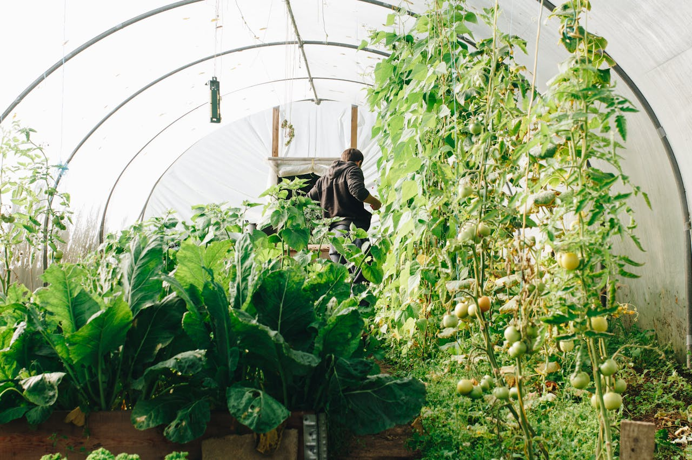

 PRODUCT QUALITY
PRODUCT QUALITY
We Always Produce
Natural Food for Better
Future.
A product you can always trust. We bring wholesomeness back to the art
of growing good food. We farm fresh goodness straight from us to your
table. Our global perspective enables us to address the unique challenges
faced by farmers in different regions, and our solutions are designed to be
adaptable and scalable. Whether it’s implementing precision farming
techniques, developing organic farming systems, or advising on climate-
smart practices, our goal is to drive positive change and support the
transition toward a more sustainable and resilient agricultural future.